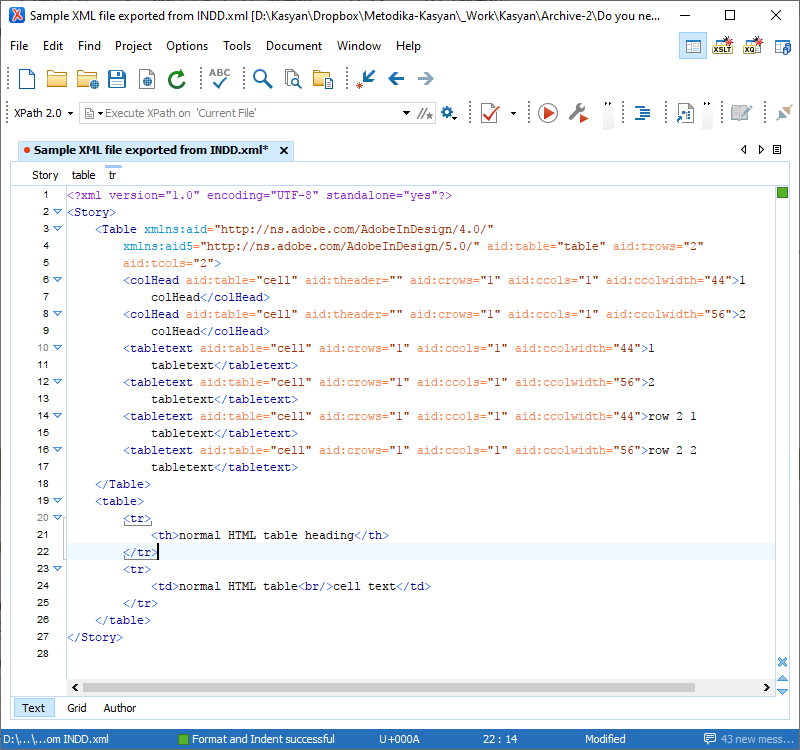

Do you need to generate HTML table rows from XML in InDesign?
General issue: you export XML and you get a bunch of content for xml elements that were a table in inDesign. But they don't have any rows, just cell after cell. What will make rows in your output?
Solution: XSLT; you need to use the @aid:tcols attribute of exported XML to determine the number of columns that your table should be. This is written in XSLT 1.1 so it shoud work with an export from InDesign. If you have problems with using it on export of XML, try using it on the XML afetr it has been exported, in Oxygen or other XSLT processor. Best to save acopy of your files before using the XSLT with them. Copy all of the plain text and past into a new file, save with your own filename, ending with .xsl file extension. Then when exporting XML from InDesign CS3-5, browse to your new .xsl file and select it. PLEASE read about XSLT files at w3c.schools or other resource if you want to understand what is going on with this file.
BTW <!-- indicates comments in code -->

<?xml version="1.0" encoding="UTF-8"?>
<!-- NO WARRANTY that this example code will work as written for your XML file in InDesign. You can add more templates to the output to map your heading styles to h1, h2, etc. -->
<xsl:stylesheet xmlns:xsl="http://www.w3.org/1999/XSL/Transform" version="1.1"
xmlns:aid="http://ns.adobe.com/AdobeInDesign/4.0/"
xmlns:aid5="http://ns.adobe.com/AdobeInDesign/5.0/" exclude-result-prefixes="xsl aid aid5">
<xsl:output method="html" indent="yes" encoding="UTF-8"
doctype-public="http://www.w3.org/TR/xhtml/DTD/xhtml-transitional.dtd"/>
<!-- parameter to use the name of element with attribute aid:theader as the th output -->
<xsl:param name="tableElem">//*[local-name()][@aid:table='table']</xsl:param>
<xsl:param name="colheadStyle">
<xsl:value-of select="//*[local-name()][@aid:theader][1]"/>
<!-- i.e. colHead-->
</xsl:param>
<!-- parameter to use the name of element with attribute aid:cell but not aid:theader as the td output -->
<!--i.e. tabletext or whatever the name of your Cell level element is in InDesign -->
<xsl:param name="cellStyle">
<xsl:value-of select="//*[local-name()][@aid:table='cell' and not(@aid:theader)][1]"/>
</xsl:param>
<!-- handles a Story element marked up with HTML-type elements, but uses the <Table> element of IDD -->
<!-- if a true HTML table is in the content, it will be passed through -->
<xsl:template match="Story"><!-- make a basic HTML file from a Story -->
<html>
<head>
<title>Sample Table</title>
</head>
<body>
<xsl:apply-templates><!-- will handle direct text of the <Story>, and <Table> -->
<xsl:with-param name="colheadStyle" select="$colheadStyle"/>
<xsl:with-param name="cellStyle" select="$cellStyle"/>
</xsl:apply-templates>
</body>
</html>
</xsl:template>
<!-- use the styles to find the elements of IDD <Table> element -->
<xsl:template match="Table">
<xsl:param name="colheadStyle">
<xsl:value-of select="$colheadStyle"/>
</xsl:param>
<xsl:param name="cellStyle">
<xsl:value-of select="$cellStyle"/>
</xsl:param>
<xsl:variable name="cellsPerRow">
<xsl:value-of select="@aid:tcols"/>
</xsl:variable>
<table><!-- start the table -->
<!-- xhtml requires lower-case name for table element-->
<tr>
<xsl:apply-templates select="*[@aid:theader='']">
<xsl:with-param name="colheadStyle" select="$colheadStyle"/>
<xsl:with-param name="cellStyle" select="$cellStyle"/>
</xsl:apply-templates>
</tr>
<!-- and @aid:style=$cellStyle -->
<xsl:for-each
select="*[@aid:table='cell'][not(@aid:theader='')][position() mod $cellsPerRow = 1]">
<!-- some code adapted with permission, from http://www.computorcompanion.com/LPMArticle.asp?ID=202
Building HTML Tables with XSL by James Byrd; please include this acknowledgement in all files that use his code -->
<!-- this is the tricky bit of the code that James Byrd set up
p-class-tabletext-[position() mod $cellsPerRow = 1 continues looping until the position of the active element divided by $cellperRow (@aid:tcols value) tried with [@aid:style=$cellStyle] has a remainder of 1 -->
<!-- .|following-sibling::p-class-tabletext-[position() < $cellsPerRow] applies first to the currently selects cell with "." then continues with the following-siblings whose position is less than the value of cells per row (@aid:tcols value) -->
<tr>
<xsl:apply-templates
select=".|following-sibling::*[@aid:table='cell'][not(@aid:theader='' )][position() < $cellsPerRow]"
/>
</tr>
</xsl:for-each>
</table>
</xsl:template>
<xsl:template match="*">
<xsl:param name="colheadStyle">
<xsl:value-of select="$colheadStyle"/>
</xsl:param>
<xsl:param name="cellStyle">
<xsl:value-of select="$cellStyle"/>
</xsl:param>
<xsl:variable name="cellsPerRow">
<xsl:value-of select="parent::Table/@aid:tcols"/>
</xsl:variable>
<xsl:choose>
<!-- colHead aid:table="cell" aid:theader=""-->
<xsl:when test="parent::Table and @aid:theader">
<th>
<xsl:apply-templates>
<xsl:with-param name="colheadStyle" select="$colheadStyle"/>
<xsl:with-param name="cellStyle" select="$cellStyle"/>
</xsl:apply-templates>
</th>
<xsl:if test="(position() = last()) and (position() < $cellsPerRow)">
<xsl:call-template name="FillerCells">
<xsl:with-param name="cellCount" select="$cellsPerRow - position()"/>
</xsl:call-template>
</xsl:if>
</xsl:when>
<xsl:when test="parent::Table and @aid:table='cell' and not(@aid:theader)">
<td>
<xsl:apply-templates>
<xsl:with-param name="colheadStyle" select="$colheadStyle"/>
<xsl:with-param name="cellStyle" select="$cellStyle"/>
</xsl:apply-templates>
</td>
<xsl:if test="(position() = last()) and (position() < $cellsPerRow)">
<xsl:call-template name="FillerCells">
<xsl:with-param name="cellCount" select="$cellsPerRow - position()"/>
</xsl:call-template>
</xsl:if>
</xsl:when>
<!-- for non-table elements this generic element handler will pick up an aid:pstyle (if present) and create a class attribute from it. Works for any element that has the same name as HTML element such as <p> but it doesn't add wrapper elements like <ul> or <ol> for lists. -->
<xsl:otherwise>
<xsl:element name="{name()}">
<xsl:if test="@aid:pstyle">
<xsl:attribute name="class">
<xsl:value-of select="@aid:ptyle"/>
</xsl:attribute>
</xsl:if>
<xsl:apply-templates>
<xsl:with-param name="colheadStyle" select="$colheadStyle"/>
<xsl:with-param name="cellStyle" select="$cellStyle"/>
</xsl:apply-templates>
</xsl:element>
</xsl:otherwise>
</xsl:choose>
</xsl:template>
<!-- take care of text that is a direct child of the <Story> by wrapping it in a <p> to make valid HTML -->
<xsl:template match="text()">
<xsl:variable name="myString">
<xsl:value-of select="string-length(normalize-space(.))"/>
</xsl:variable>
<xsl:choose>
<xsl:when test="parent::Story">
<xsl:if test="$myString > 0">
<xsl:element name="p">
<xsl:attribute name="class">text</xsl:attribute>
<xsl:value-of select="normalize-space(.)"/>
</xsl:element>
</xsl:if>
</xsl:when>
<xsl:otherwise>
<xsl:value-of select="normalize-space(.)"/>
</xsl:otherwise>
</xsl:choose>
</xsl:template>
<!-- make br element conform to good HTML markup -->
<xsl:template match="br">
<br />
</xsl:template>
<!-- this recursive template calls itself until its test condition is satified -->
<!-- it outputs a cell whose only content is a non-breaking space -->
<!-- do not use in place of Unicode   for the non-breaking space -->
<!-- the value of $cellCount is set in the main XSL template -->
<xsl:template name="FillerCells">
<xsl:param name="cellCount"/>
<td> </td>
<xsl:if test="$cellCount > 1">
<xsl:call-template name="FillerCells">
<xsl:with-param name="cellCount" select="$cellCount - 1"/>
</xsl:call-template>
</xsl:if>
</xsl:template>
</xsl:stylesheet>
Click here to download the example files.